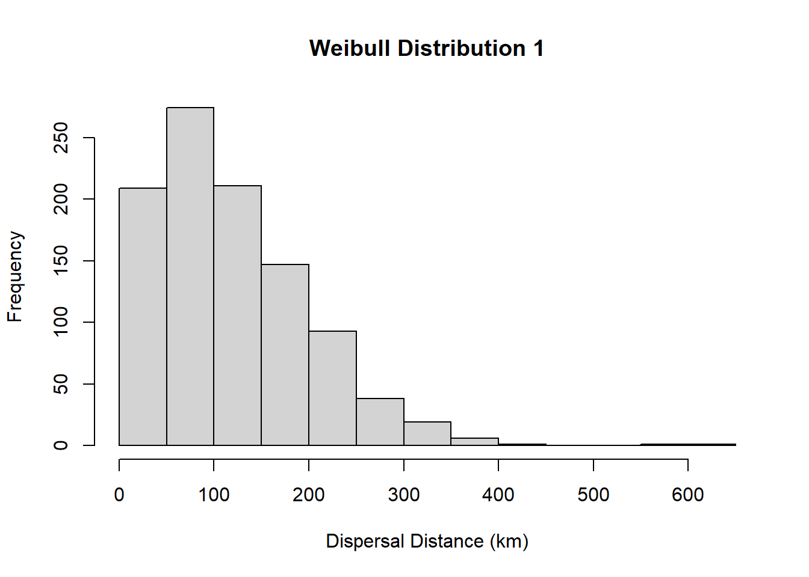

Building and running custom mechanistic eco-evolutionary biodiversity models
Paleoenvironmental Reconstruction
Now we will repeat the drill with some more realistic paleoenvironmental reconstruction of South American temperature and aridity at a coarse spatial resolution of 2 degrees, and at a temporal resolution of 1 million years. This is a very rough temporal resolution but should do for our purpose. Load it in and investigate some of it’s features.
# read the R data filelandscape <-readRDS(here::here("data", "landscapes", "SouthAmerica", "landscapes.rds"))# classclass(landscape)
[1] "list"
# namesnames(landscape)
[1] "temp" "arid" "area"
# dimensionsdim(landscape$temp)
[1] 1476 68
# take a look at first elementslandscape$temp[1:10, 1:10]
x y 1 2 3 4 5 6 7
1 -94 12 NA NA NA NA NA NA NA
2 -92 12 NA NA NA NA NA NA NA
3 -90 12 NA NA NA NA NA NA NA
4 -88 12 NA NA NA NA NA NA 27.97588
5 -86 12 22.76293 28.90419 28.61839 28.47647 28.00591 27.22872 26.96520
6 -84 12 23.40779 29.34289 28.68802 28.96432 28.39244 27.69988 27.31383
7 -82 12 NA NA NA NA NA NA NA
8 -80 12 NA NA NA NA NA NA NA
9 -78 12 NA NA NA NA NA NA NA
10 -76 12 NA NA NA NA NA NA NA
8
1 NA
2 NA
3 NA
4 27.87671
5 27.05735
6 27.95244
7 NA
8 NA
9 NA
10 NA
❓ Question [max 5 min] Compare SA_65 and SA_1. Which regions changed most through time, and how could those changes influence speciation and extinction in your simulation?
Configs
Load in a config file containing the rules and parameters of a single simulation. We’ll get into what this all means in the next chapter.
Now time to run a simulation in South America. We’ll just run from 20 million years ago to the present-day at 1 million year intervals so it runs quick enough to finish in a couple of minutes. Note the output as it runs. Think about what its printing.
If you’ve made it this far, great! You’re equipped with the tools, now we’re ready to explore how Gen3sis works in more detail.
To dive into what gen3sis is, and how it operates, we’ll start by looking a config file. The config is the code for the ecological and evolutionary rules and other parameters of gen3sis, such as the random seed, instructions on saving output.
A config file is a a stand-alone R script which is modified by you. You can modify a config in two ways. The first way and most practical, is to open up a config.R file. For example you can navigate to the folder open the file, or you can use this line and it should appear in your RStudio window.
Alternatively you can load a config into the RAM and modify there. We’ll do this now as its a bit easier to demonstrate, but you can do a local copy of the config file and modify it directly. Lets start with the config we used in the previous section. We should still have that config loaded in our workspaces, but if not run this code.
So these two ways of editing the config lend themselves to two different ways of running the config. We can either point the run_simulation function to the config file or the config stored in memory.
# DON'T RUN# run from config filesim <-run_simulation(config = here::here("assets", "materials", "day1", "configs", "config_southamerica_Day1Prac1.R"), landscape = here::here("data", "landscapes", "SouthAmerica"),output_directory = here::here("output", "SouthAmerica"),verbose=1)# run from config in memorysim <-run_simulation(config = config, landscape = here::here("data", "landscapes", "SouthAmerica"),output_directory = here::here("output", "SouthAmerica"),verbose=1)
This isn’t that important for now but we are just flagging it for future reference.
Oh boy, that’s intimidating. But, don’t stress, we’ll go through it piece by piece and learn what each bit is doing.
str(config)
List of 3
$ gen3sis :List of 6
..$ general :List of 9
.. ..$ random_seed : logi NA
.. ..$ start_time : num 20
.. ..$ end_time : logi NA
.. ..$ max_number_of_species : num 50000
.. ..$ max_number_of_coexisting_species: num 10000
.. ..$ end_of_timestep_observer :function (data, vars, config)
.. ..$ trait_names : chr [1:3] "temp" "temp_breadth" "dispersal"
.. ..$ environmental_ranges :List of 3
.. .. ..$ temp: num [1:2] -45 55
.. .. ..$ area: num [1:2] 2362 12923
.. .. ..$ arid: num [1:2] 1 0.5
.. ..$ verbose : logi FALSE
..$ initialization:List of 2
.. ..$ initial_abundance : num 1
.. ..$ create_ancestor_species:function (landscape, config)
..$ dispersal :List of 2
.. ..$ max_dispersal : num Inf
.. ..$ get_dispersal_values:function (n, species, landscape, config)
..$ speciation :List of 2
.. ..$ divergence_threshold : num 2
.. ..$ get_divergence_factor:function (species, cluster_indices, landscape, config)
..$ mutation :List of 1
.. ..$ apply_evolution:function (species, cluster_indices, landscape, config)
..$ ecology :List of 1
.. ..$ apply_ecology:function (abundance, traits, environment, config)
$ user :List of 1
..$ my_function:function (x)
$ directories: list()
- attr(*, "class")= chr "gen3sis_config"
names(config)
[1] "gen3sis" "user" "directories"
We can see that the config is a list with 3 components: 1. gen3sis, 2. user, 3. directories. For now, we’ll focus on gen3sis which is the meat of the config. This ‘gen3sis’ element itself is a list of 6 elements: ‘general’, ‘initialization’, ‘dispersal’, ‘speciation’,‘mutation’, and ‘ecology’.
The random seed determines the starting point for random number generators in R. Because the simulations have stochastic processes, to reproduce a result, we need to have the same random seed, so by fixing it in a simulation, we can ensure we will get the exact same results next time we run the sim. Let’s change the seed to 777.
config$gen3sis$general$random_seed
[1] NA
config$gen3sis$general$random_seed <-777
The start time is the time-step of the landscape file which the simulation will start at. We saw in the previous chapter that the South American landscape file had 65 time-steps, but we actually only started our simulation at time-step 20, or 20 time-steps before the final one. Each time-step in the landscape is 1 million years apart, so the timestep 20 is 20 million years ago. However, if the landscape units were in 100 thousand years, then time-step 20 would be 2 million years ago. Let’s run the next simulation from an older timepoint, lets say the start of the Oligocene, 34 Ma.
config$gen3sis$general$start_time
[1] 20
config$gen3sis$general$start_time <-34
Our simulation ran from 20 Ma to the present-day. However, we may wish for the simulation to finish before the present-day, for example just the Oligocene period 34Ma - 23Ma. To do this we can change the ‘end_time’. When left as NA, the simulation will run to the final time-step. So let’s change that to 23 Ma.
config$gen3sis$general$end_time
[1] NA
config$gen3sis$general$end_time <-23
Other general settings include setting the maximum number of species in simulation, and in each grid cell before the simulation terminates (max_number_of_species, max_number_of_coexisting_species) which is a good way of aborting simulations before they get unwieldy, the names of the traits that each species will have in the simulation (trait_names), and the range of the environmental data (environmental_ranges). We’ll these as is for now.
Last but not least in the general setting is the oberserver function. At each time step in the simulation, users have the option to save different outputs and make different plots. The species object contains a list, where each element is a species. The species has information on the occupancy, abundance, and trait values of populations of that species in all inhabited grid cells. The phylogeny object contains information on the relatedness of all species to each other.
Most of the biodiversity infromation we simulate is contained in species objects and phylogeny objects so we will save these at each timestep. We will also plot species richness as a way of visualizing how the simulation proceeds.
config$gen3sis$general$end_of_timestep_observer =function(data, vars, config){save_species()save_phylogeny()# plotting function example:plot_richness(data$all_species, data$landscape)}
Initialization
Initialization lets us define the number, abundance, location, and traits of the ancestral species. This is what you start the simulation with. You may want to start with a single species, so the simulation follows the diversification of single monophyletic radiation. Alternatively, you may seed the landscape with many species and this is also possible. Each species must be given the locations in which they will occur, in the form of characters matching the grid cell identifiers, and values for the traits we named in the general settings.
In this example, we are generating five species to begin. We first define a box from which we sample points to use to place the first species on the landscape. We randomly sample a single grid cell to place each initial species in. Next, we give each initial species values for the three traits. Here, we give the value for temp as the temperature value of the grid cell the species will occur in. We set a dispersal equal to 1. We repeat this 5 times, for 5 species. We can create more ancestor species by repeating this process in a loop , or we could manually create ancestral range by hand-selecting grid cells for the species to occur in.
Dispersal (migration)
How species disperse across the landscape is determined by simulated migration events between habitable cells. The range and behaviour of these events is set by users and can be based on fixed values, draws from probability distributions, species trait values, or anything else thought up by users.
Here we set the maximum dispersal distance as infinty (e.g., no maximum), and we draw the dispersal values from a Weibull distribution with shape parameter = 1.5 and scale = 133. We can see what this distribution looks like by plotting a histogram.
hist(rweibull(1000, 1.5, 133), main="Weibull Distribution 1", xlab="Dispersal Distance (km)")

You can see the dispersal kernel is skewed around the scale parameter (here scale =133), so most dispersal is over shorter distances but some dispersal will be over a longer distance. You can play with the parameters to change the dispersal kernel. These could be based on a trait of the species.
In the speciation function, we determine how populations diverge from one another and when they are sufficiently divergent to become new species. Populations that are geographically isolated (allopatric) diverge at each time step by the divergence factor and are considered new species when the accumulated divergence is greater than the divergence threshold. Divergence decreases when they come back into secondary contact at a rate of 1 and will coalesce into the same population once divergence is equal to 0.
In this example, the get_divergence_funtion returns a value of 1 each timestep, so the divergence accumulates by a value of 1 at each time step and populations become new species when divergence is greater than the divergence threshold, here given a value of 2. So a new species can form if two populations has been isolated for two timesteps.
We can change either the amount of divergence required for speciation…
Both of these will speed up the rate of speciation, given enough population fragmentation.
❓ Question [max 5 min] If you increase both the divergence threshold and the divergence factor at the same time, what net effect do you expect on speciation rate, and why?
Mutation (trait evolution)
In the evolution function, we determine how the species’ traits change at each timestep and therefore how they evolve over time. In gen3sis, each species is comprised of separate populations in each inhabited grid cell, these populations form geographic clusters that are within dispersal distance of one another and could be considered to exchange individuals, and all geographic clusters together comprise the species.
We can evolve traits of each population independently. Alternatively, we could give all populations within a geographic cluster shared trait values and evolve traits at this level of organization, or again at the whole species level. At which level of biological organization you evolve traits will depend on your hypothesis and the system you are trying to represent.
In addition to mutating the traits of species, we might also want to homogenise traits of populations that are likely exchanging gene flow.
This example, highlights both homogenising traits and evolving traits.
Homogensation assigns each geographic cluster the avaerage trait value weighted by the abundance of each population. Here larger populations contribute more than smaller populations to the avergae.
After homogenisation, the trait evolves by drawing random values from a normal distribution and adding these to the traits. A mean of 0 ensures that positive trait changes and negative trait changes are equally likely. The trait_evolutionary_power variable detemines the degree of trait evolution, with higher values leading to higher average trait changes each time step. This process of adding a random normal variable approximates a Brownian motion model of trait evolution.
Ecology (interactions)
Every species present in a cell across the landscape has an abundance value representing the population size of the species in that location. The ecology function allows users to modify this abundance value based on environmental values, species interactions, or anything else relevant to the study. An abundance of 0 leads to the extinction of the species in that cell.
Here we use the temp trait (temperature niche position) and temp_breadth (temperature niche breadth) to determine whether a population can survive in cell. We get the absolute difference between the niche position and the temperature value in the grid cell. We then ask if this difference is more than the niche breadth. If it is larger, this means the value of the grid cell is outside the population’s niche breadth and it goes extinct in that grid cell. Extinction is indicated by giving the abundance a value of 0 or setting the abundance to FALSE as done here.